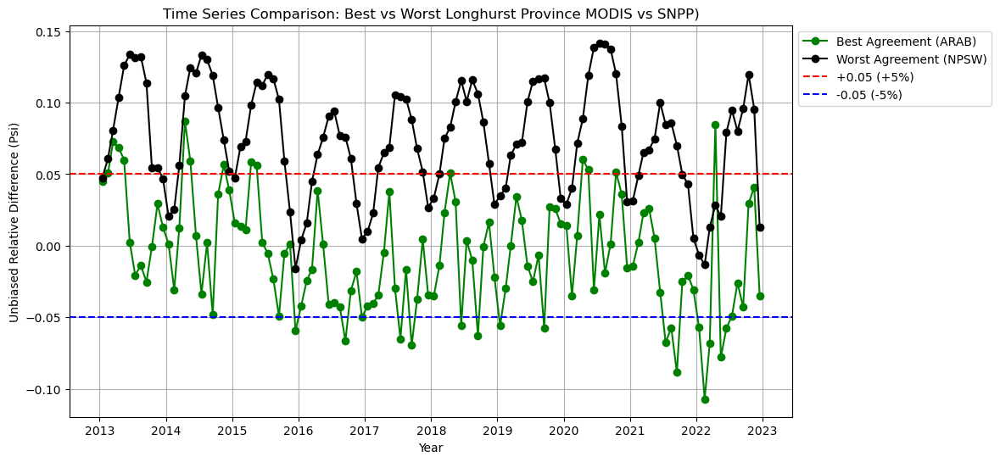

Statistical Analysis
To evaluate the differences and similarities between the legacy MODIS-Aqua primary productivity product and the interim VIIRS-SNPP and VIIRS-NOAA20 products, we conducted a comprehensive statistical analysis.
The analysis includes:
- Unbiased Relative Difference (ψ) & Biased Relative Difference (Δrel) \(\Rightarrow\) Measures how VIIRS compares to MODIS without and with bias.
- Pearson Correlation Coefficients & P-values \(\Rightarrow\) Evaluates how VIIRS follows MODIS over time.
- Linear Regression Trends & P-values \(\Rightarrow\) Identifies long-term changes in productivity.
- Contingency Matrices \(\Rightarrow\) Measures trend agreement across datasets.
Unbiased Relative Difference (ψ)
The unbiased relative difference (ψnetPP) of the interim VIIRS netPP (netPPVIIRS) and legacy MODIS netPP (netPPMODIS) products was calculated to assess the consistency in netPP estimates between interim VIIRS and legacy MODIS datasets. This metric provides validation that the interim netPP products can be reliably used for continuity in long-term productivity analyses.
For a detailed explanation of the calculation, see the Appendix.
Spatial Variability in the Timeseries Monthly Mean ψ
 Figure 1. Global maps of the monthly mean unbiased relative difference (\(\bar{\psi}_{lat/lon}\)) comparing MODIS-Aqua with VIIRS-SNPP (top) and VIIRS-NOAA20 (bottom). Positive values indicate higher VIIRS estimates; negative values indicate lower VIIRS estimates.
Figure 1. Global maps of the monthly mean unbiased relative difference (\(\bar{\psi}_{lat/lon}\)) comparing MODIS-Aqua with VIIRS-SNPP (top) and VIIRS-NOAA20 (bottom). Positive values indicate higher VIIRS estimates; negative values indicate lower VIIRS estimates.
The lighter blue and yellow regions in Fig. 1 suggest strong agreement between MODIS-Aqua and VIIRS netPP estimates, particularly in mid-latitude open ocean regions where differences are relatively small. This reinforces that VIIRS provides a reliable continuation of MODIS-based estimates in these areas.
- Dark blue (positive \(\bar{\psi}_{lat/lon}\)) regions \(\Rightarrow\) VIIRS estimates are higher than MODIS.
- Dark red (negative \(\bar{\psi}_{lat/lon}\)) regions \(\Rightarrow\) VIIRS estimates are lower than MODIS.
Most regions exhibit slightly higher VIIRS estimates, with larger disagreements in coastal upwelling zones and polar regions, where environmental factors and sensor differences may contribute to variability.
Despite these regional differences, the overall agreement between MODIS and VIIRS is strong, ensuring that users can confidently transition to the interim VIIRS-based primarily productivity products.
Comparing the Best and Worst Fit Longhurst Provinces
 Figure 2. Regions with the strongest (green) and weakest (black) agreement between MODIS-Aqua and VIIRS-SNPP.
 Figure 3. Regions with the strongest (green) and weakest (black) agreement between MODIS-Aqua and VIIRS-NOAA20.
Figure 3. Regions with the strongest (green) and weakest (black) agreement between MODIS-Aqua and VIIRS-NOAA20.
In both sensor comparisons, the Arabian Sea Province (ARAB) consistently shows the strongest agreement with an absolute mean unbiased relative difference of -0.0013. This suggests minimal deviation between the sensors.
In contrast, the North Pacific Subtropical Water Province (NPSW) exhibits the weakest agreement, with a significantly higher absolute mean unbiased relative difference of 0.1130, indicating that VIIRS-SNPP and NOAA20 tend to overestimate netPP in this region.
Overall, the ARAB province consistently exhibits the strongest agreement, while the NPSW province experiences the greatest discrepancies.
Biased Relative Difference (Δrel)
The biased relative difference (Δrel) provides an alternative measure of variation between MODIS and VIIRS netPP estimates, revealing patterns of overestimation or underestimation between MODIS and VIIRS. The biased relative difference directly shows the magnitude of disagreement between MODIS and VIIRS.
For a detailed explanation of the calculation, see the Appendix.
Spatial Variability in the Timeseries Monthly Δ Mean
 Figure 4. Global maps of the monthly mean biased relative difference (\(\bar{\Delta}_{lat/lon}\)) comparing MODIS-Aqua with VIIRS-SNPP (top) and VIIRS-NOAA20 (bottom). Positive values indicate higher VIIRS estimates; negative values indicate lower VIIRS estimates.
Figure 4. Global maps of the monthly mean biased relative difference (\(\bar{\Delta}_{lat/lon}\)) comparing MODIS-Aqua with VIIRS-SNPP (top) and VIIRS-NOAA20 (bottom). Positive values indicate higher VIIRS estimates; negative values indicate lower VIIRS estimates.
The light blue and yellow regions in Fig. 4 indicate that VIIRS and MODIS netPP estimates are relatively similar in most mid-latitude open ocean regions.
- Dark blue (positive \(\bar{\Delta}_{lat/lon}\)) regions \(\Rightarrow\) VIIRS overestimates netPP compared to MODIS.
- Dark red (negative \(\bar{\Delta}_{lat/lon}\)) regions \(\Rightarrow\) VIIRS underestimates netPP compared MODIS.
The largest overestimations occur in equitorial upwelling zones, where VIIRS reports significantly higher productivity than MODIS. In contrast, polar regions and coastal upwelling zones show the most pronounced underestimations, indicating lower VIIRS estimates relative to MODIS.
VIIRS-SNPP aligns more closely with MODIS than VIIRS-NOAA20, however both VIIRS sensor demonstrate consistent spatial patterns, reflecting that they can be used for long-term productivity analyses.
Linear Regression Trends
MODIS vs SNPP (2013-2022)

MODIS vs NOAA20 (2018-2022)

Contingency Matrices
MODIS vs SNPP (2013-2022)

MODIS vs NOAA20 (2018-2022)

Download Statistical Analysis Data Products
Access datasets used in the statistical analysis, including unbiased and biased relative differences, correlations, trends, and contingency matrices.
References
Mélin, F., V. Vantrepotte, A. Chuprin, M. Grant, T. Jackson, and S. Sathyendranath. 2017. Assessing the fitness-for-purpose of satellite multi-mission ocean color climate data records: A protocol applied to OC-CCI chlorophyll- a data. Remote Sensing of Environment 203:139–151.Appendix
Unbiased Relative Difference (ψ)
The pixel-by-pixel unbiased relative difference (ψnetPP) was computed for the globe for each month at 9km resolution across two datasets.
Formula
The unbiased relative difference (ψnetPP) is calculated for each pixel as follows:
\(ψ^{netPP} = \frac{netPP_{VIIRS} - netPP_{MODIS}}{\left(\frac{netPP_{VIIRS} + netPP_{MODIS}}{2}\right)}\)
Where:
- The difference between VIIRS-based netPP (netPPVIIRS) and MODIS-based netPP (netPPMODIS) values for that pixel is divided by the mean of netPPVIIRS and netPPMODIS.
This metric allows for sensor-to-sensor consistency assessment, ensuring that variations are not biased by absolute magnitude differences.
Biased Relative Difference (Δrel)
The pixel-by-pixel biased relative difference (Δrel) was created for the globe for each month at 9km resolution across two datasets.
The biased relative difference (ΔnetPP) is calculated for each pixel as follows:
\(\Delta^{netPP} = \frac{netPP_{VIIRS} - netPP_{MODIS}}{netPP_{MODIS}}\)
Where:
- The difference between VIIRS-based netPP (netPPVIIRS) and MODIS-based netPP (netPPMODIS) values for that pixel is divided by netPPMODIS.
This metric is useful for identifying systematic overestimations or underestimations in primary productivity estimates between the sensors.
Linear Regression Trends
The purpose of calculating linear trends for each of the datasets is to evaluate how much the products agree or disagree over time and across regions. Linear trends were calculated in the time series of monthly primary productivity for each pixel with either raw data or anomalies for the MODIS-Aqua, VIIRS-SNPP, and VIIRS-NOAA20 datasets. Finding trends using raw data helps to analyze the absolute agreement in primary productivity estimates between the datasets, whereas calculating with anomalies enables us to focus on trends by removing seasonality. P-values were calculated to test the statistical significance of the trends for each pixel.
The trend analysis follows methods outlined in Melin et al. 2017, see the section 2.3 “Trend estimates and comparison of trends”.
Contingency Matrices
Using the linear trends calculated above, a contingency matrix was constructed to compare the agreement or disagreement of trends between the legacy and interim primary productivity products. Pixels were categorized by the matrix into three groups based on the sign of the slope.
- Postive trend: Increasing trend (positive slope).
- Negative trend: Decreasing trend (negative slope).
- No significant trend: Slope not significantly different from zero.
The contingency matrix shows the percentage of pixels where the legacy and interim primary productivity products agree or disagree. The diagonal cells descending from left to right show where the products agree, and the off-diagonal cells show where the products disagree.
The contingency matrix is used to compute Cohen’s Kappa, a statistical measure that quantifies the level of agreement between the two NetPP products. Cohen’s Kappa accounts for the agreement occuring by chance and provides a standardized metric of similarity. The scale ranges from 0 (no agreement) to 1 (perfect agreement).